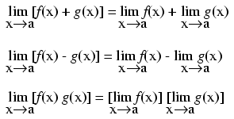
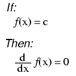
("c" being a constant)
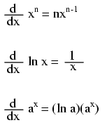
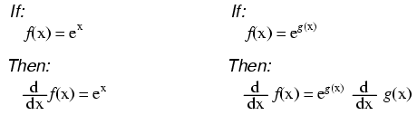
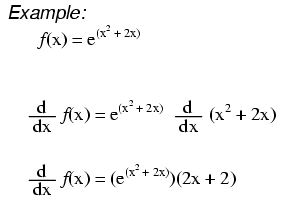
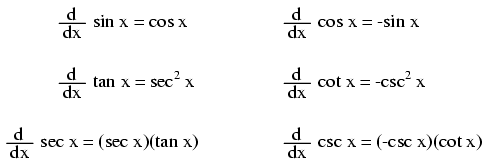
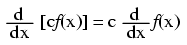
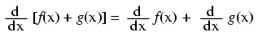
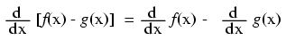
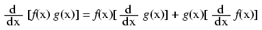
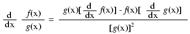
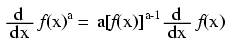
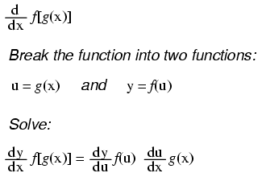
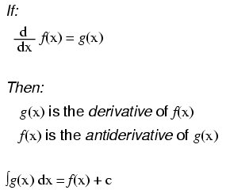
Notice something important here: taking the derivative of f(x) may precisely give you g(x), but taking the antiderivative of g(x) does not necessarily give you f(x) in its original form. Example:
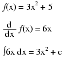
Note that the constant c is unknown! The original function f(x) could have been 3x2 + 5, 3x2 + 10, 3x2 + anything, and the derivative of f(x) would have still been 6x. Determining the antiderivative of a function, then, is a bit less certain than determining the derivative of a function.
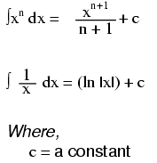
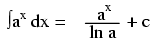
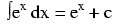
Note: this is a very unique and useful property of e. As in the case of derivatives, the antiderivative of such a function is that same function. In the case of the antiderivative, a constant term "c" is added to the end as well.
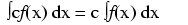
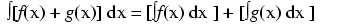
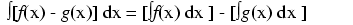
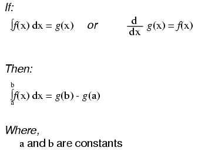
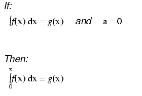
As opposed to normal equations where the solution is a number, a differential equation is one where the solution is actually a function, and which at least one derivative of that unknown function is part of the equation.
As with finding antiderivatives of a function, we are often left with a solution that encompasses more than one possibility (consider the many possible values of the constant "c" typically found in antiderivatives). The set of functions which answer any differential equation is called the "general solution" for that differential equation. Any one function out of that set is referred to as a "particular solution" for that differential equation. The variable of reference for differentiation and integration within the differential equation is known as the "independent variable."
Lessons In Electric Circuits copyright (C) 2000-2023 Tony R. Kuphaldt, under the terms and conditions of the CC BY License.